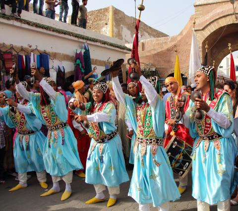

À propos du club
Le Club Culturel El Medina est une association passionnée dédiée à la promotion des arts et de la culture tunisienne. Fondé en 2015, notre club organise des événements variés allant de la musique traditionnelle aux expositions d'art contemporain. Nous œuvrons à créer un espace de rencontre et d'échange culturel pour tous les amateurs d'art et de patrimoine. Notre mission est de préserver et de valoriser la richesse culturelle tunisienne tout en encourageant la créativité et l'innovation artistique.
